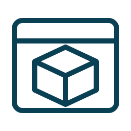
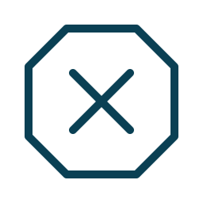
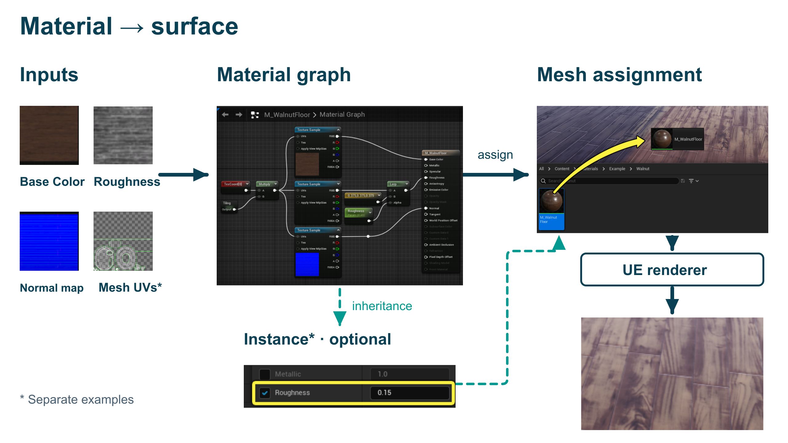
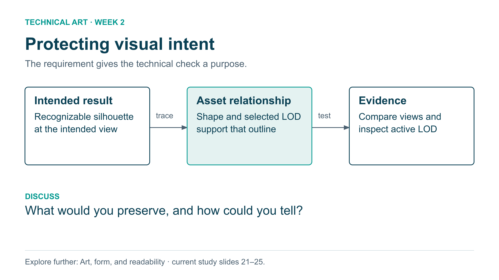
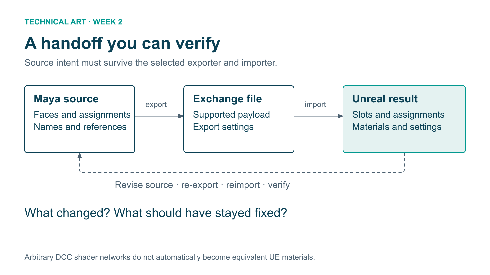

One course, a reusable visual vocabulary
Preserve the Week 1 lens badges. Use the companion symbols to label assets, actions, and study routes across future weeks. Actual screenshots remain the evidence for Maya and Unreal behavior.
Derived from the Week 1 STUDENT deck, especially slide 82. Exact lens colors and original fonts are recorded in tokens.json. New SVG/PNG diagrams explicitly use Arial as a portable fallback, rather than claiming an exact Posterama/Avenir match.
The four lenses · original PNGs
constraints
Original transparent PNG · 1024²

Unmodified course asset. Preserve its established meaning. Original external provenance remains unconfirmed.
systems
Original transparent PNG · 1024²

Unmodified course asset. Preserve its established meaning. Original external provenance remains unconfirmed.
leverage
Original transparent PNG · 1024²

Unmodified course asset. Preserve its established meaning. Original external provenance remains unconfirmed.
throughput
Original transparent PNG · 1024²

Unmodified course asset. Preserve its established meaning. Original external provenance remains unconfirmed.
Companion icons · original vector artwork
Ink and white versions, with true alpha transparency. Labels stay editable in the slide. Select a PNG size or retain SVG for resizing.
host-python
Week 3 Python Hosts and pure-Python examples: ordinary Python (python.exe). Script-page symbol; pair with an editable Python label. Capability is not the selected interpreter: if class runs this example with mayapy, display the mayapy badge instead.


host-mayapy
Week 3 Python Hosts, standalone PySide examples and Lab 1: Maya external Python (mayapy.exe), launched from VS Code/terminal. Terminal-and-cube symbol. This process does not control the already-open Maya scene. Pair with mayapy.exe text.




host-maya
Week 3 Python Hosts, Maya introduction walkthrough and Lab 2: Python inside Maya, run in the Python Script Editor against the current interactive scene. Scene-window-and-cube symbol. Pair with In Maya text. These original symbols are not Autodesk/Python product logos.


mesh
Slides 7–9: mesh data. Pair with an actual mesh or index example.


texture
Slides 87–93: sampled data. Never imply that every texture is color.


material
Slides 99–105: material graph or property relationships; not the GPU itself.


skeleton
Slides 110–112: joint hierarchy; a diagram of weights still needs explicit vertex evidence.


intent
Slides 28, 52, 103: intended appearance and artistic judgment. Not a fifth Week 1 lens.


inspect
Slides 30, 73, 125: gather evidence before a diagnosis.


code
Slides 8, 119, 136: inspectable data or a repeatable check, not automatic proof of correctness.


record
Slides 117, 129: reproducible evidence and maintainer documentation.


question
The 15 discussion pauses: student questions and peer reasoning. Pair with the actual prompt.


appendix
Explore further pointers: link to a named optional section and a return destination.


reset
Museum setup and documentation: restore the declared starting state.


pass
One named check passed. Always display PASS and the scope; not a whole-asset certificate.



fail
An observed value violates the declared rule. Pair with FAIL and a reason.


review
Missing context or uncertainty. Pair with REVIEW and the needed evidence.


Diagrams · revised standard and earlier starters
New and revised diagrams: transparent canvas, concise labels, bold arrows, real image crops. Explanations and sources stay in the clean HTML view. The material diagram applies this standard; the two unchanged earlier starters are identified below.

Current slide 100: use this image-led relationship overview, reveal the main route first, then the optional instance branch. Current slide 102: revisit the parent and assignment distinction. On 104, return briefly to the normal-map input before the actual normals comparison.
Clean diagram view · Transparent PNG · SVG
A brief art-lens bridge: connect an artistic goal to a controlled technical inspection. The boxes are a teaching model, not captured software evidence.
Clean diagram view · PNG · SVG
Orient the Maya → exchange → Unreal demonstration. Pair each box with the actual settings or assignments shown in class. The return arrow represents a new source revision and repeated delivery.
Clean diagram view · PNG · SVGWeek 7 · tooling and UX
Six editable diagrams: shared assets, DCC handoff, preview states, interface/backend, layout sketches, and the testing loop. Transparent PNGs and SVG masters have their own provenance register.
Week 1 reference
Actual slide 82 · Actual slide 78. These are reference snapshots, not changes to the original deck.


New icons and diagrams are illustrative course artwork. No third-party icon library was copied into the starter set. Licensing and source records remain in manifest.json.